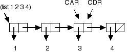
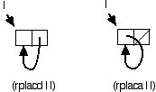

Присваивание сильно отличается от привязки, и во многих случаях приводит к программам, которые труднее понять. Несмотря на это, есть (иногда) причины предпочесть присваивание. В этой главе мы рассмотрим присваивание и его связь с разрушающей модификацией данных. Мы также рассмотрим несколько функций Lisp, реализующих разрушающую модификацию.
Каждый раз, когда ваша программа вызывает SETQ или
SETF, она присваивает новое значение существующему
хранилищу, уничтожая значение, которое ранее было в этом расположении.
Как мы увидим в этой главе, использование присваивания сопряжено
как с рисками, так и с выгодами; вы должны понимать компромиссы,
чтобы написать Лисп-код, который является одновременно правильным
и эффективным.
Каждый раз, когда вы определяете функцию, использующую переменные,
эти переменные либо связанны(bound), либо свободны(
free). Связанная переменная возникает в форме привязки,
которая возникает в определении функции. Форма привязки- это просто форма,
которая создает новую ассоциацию(связь) между именем переменной и местом хранения
ее значения; наиболее распространенными формами привязки являются
LET и список аргументов в DEFUN или
LAMBDA.
Есть небольшое терминологическое противоречие в использовании слова "связанный"(bound). Конфликт всегда разрешается контекстом употребления слова, но вы должны быть осведомлены о двух значениях. В этой главе мы говорим исключительно о том, что имя переменной привязано к месту хранения ее значения; когда мы говорим, что Lisp создает привязку для переменной, мы имеем в виду, что он создает новое место для хранения значения под заданным именем.Другой смысл привязки(bound)-не обсуждавшийся ранее в этой главе - это привязка значения к месту хранения; Lisp поддерживает понятие несвязанного - или несуществующего - значения.
Переменная является свободной внутри функции, если
функция не предоставляет формы привязки для имени переменной.
В следующем примере переменная E свободна в обеих
функциях CLOSURE-1 и CLOSURE-2.
? (let ((e 1))
(defun closure-1 () e))
CLOSURE-1
? (closure-1)
1
? e
Error: unbound variable
Итак, что же происходит, когда функция должна ссылаться на свободную переменную? Lisp создает замыкание(closure), которое захватывает привязки свободных переменных для функции. Переменные, свободные в пределах функции, на само деле имеют привязки, но привязки находятся вне определения функции. Когда Lisp выполняет функцию, он находит свободные переменные в замыкании. (Более подробно мы рассмотрим замыкания в главе 15.)
Замыкания важны, потому что они позволяют функции захватывать
(capture) и сохранять лексические привязки. Взгляните
еще раз на приведенный выше пример. Когда мы вычисляли
(CLOSURE-1), переменная E больше не была
видна в приглашении верхнего уровня. Но поскольку функция имела
замыкание для этой переменной, она все еще имела доступ к ее привязке.
Давайте немного расширим предыдущий пример.
? (let ((e 1))
(defun closure-1 () e)
(setq e 7)
(defun closure-2 () e))
CLOSURE-2
? (closure-1)
7
? (closure-2)
7
Вы понимаете, почему (CLOSURE-1) вернуло 7, а не 1?
Мы создали привязку для переменной E и дали ей начальное
значение 1. Даже если CLOSURE-1 был определен, когда
значение E было равно 1,это не имеет значения: замыкание
захватывает привязку - связь между именем и местом хранения. Когда
мы присвоили 7 в качестве значения E (непосредственно перед
определением CLOSURE-2), мы изменили только одно место
хранения для этой привязки. Поскольку свободная переменная E
обеих функций замкнута на одну и ту же привязку, они должны получить одно
и то же значение.
Это поведение может быть использовано с хорошим эффектом.
? (let ((counter 0))
(defun counter-next ()
(incf counter))
(defun counter-reset ()
(setq counter 0)))
COUNTER-RESET
? (counter-next)
1
? (counter-next)
2
? (counter-next)
3
? (counter-next)
4
? (counter-reset)
0
? (counter-next)
1
Однако некоторые формы итераций Lisp связывают свои переменные итерации
только один раз, а затем присваивают новые значения на последующих
итерациях. DO и DO* присваивают своим переменным
итерации. DOLIST и DOTIMES могут присвоить своим
итерационным переменным (и, вероятно, будут присваивать в любой реализации,
потому что это более эффективно). Вы должны иметь это в виду, если пишете
код, который создает замыкание для переменной итерации. Этот пример
иллюстрирует этот момент (см. Главу 12,
Если вы хотите прочитать MAPCAR):
; Closure captures assigned variable -- probably wrong
? (let ((fns ()))
(dotimes (i 3)
(push #'(lambda () i) fns))
(mapcar #'funcall fns))
(3 3 3)
; New bindind created for each captured variable
? (let ((fns ()))
(dotimes (i 3)
(let ((i i))
(push #'(lambda () i) fns)))
(mapcar #'funcall fns))
(2 1 0)
Мы видели, что присваивание может вызвать неожиданное поведение при наличии замыканий. Присваивание также может вызвать проблемы при использовании разделяемых(общих) данных.
? (defun nil-nth (n l)
"Set nth element of list to nil and return modified list."
(setf (nth n l) nil)
l)
NIL-NTH
? (defparameter *my-list* (list 1 2 3 4))
*MY-LIST*
? (nil-nth 1 *my-list*)
(1 NIL 3 4)
? *MY-LIST*
(1 NIL 3 4)
Предупреждение: Если вы привыкли программировать на языке, который позволяет изменять параметры функции по ссылке, предыдущий фрагмент кода может показаться вам очень соблазнительным. Мой совет заключается в том, чтобы отбросить все мысли об использовании этого метода для эмуляции параметров по ссылкам и использовать множественные значения (Глава 3, Урок 9), чтобы безопасно и эффективно возвращать несколько результатов из функции.
Приведенный выше пример не является ошибочным, но он опасен.
За исключением очень особых ситуаций, мы хотели бы, чтобы наши
функции принимали Аргументы и возвращали значения. Проблема с
NIL-NTH заключается в том, что он присваивает новое
значение в списке, передаваемом в качестве параметра. В нашем
примере этот список является глобальным и может быть раздяем с
другими частями программы. Если все, что мы действительно хотели
сделать, это получить копию списка аргументов с N-м элементом,
равным NIL, то мы не должны были изменять переданный
аргумент. Вот лучший способ реализовать NIL-NTH:
? (defun nil-nth (n l)
"Return list with nth element set to nil."
(if (zerop n)
(cons nil (rest l))
(cons (car l) (nil-nth (1- n) (rest l)))))
NIL-NTH
? (defparameter *my-list* (list 1 2 3 4))
*MY-LIST*
? (nil-nth 1 *my-list*)
(1 NIL 3 4)
? *MY-LIST*
(1 2 3 4)
Если присваивание чревато опасностью, то почему бы просто не убрать его из языка? Есть две причины: выразительность и оперативность. Присваивание-это самый простой способ изменить общие(разделяемые) данные. И присваивание более эффективно, чем привязка. Привязка создает новое место хранения, которое выделяет хранилище, которое использует дополнительную память (если привязка никогда не выходит за пределы области действия) или добавляет нагрузку сборщику мусора (если привязка в конечном итоге выходит за пределы области действия).
Некоторые операции над списками (и последовательностями-см. Главу 12) имеют как разрушающие, так и неразрушающие аналоги.
Nondestructive Destructive -------------- ----------- SUBLIS NSUBLIS SUBST NSUBST SUBST-IF NSUBST-IF SUBST-IF-NOT NSUBST-IF-NOT APPEND NCONC REVAPPEND NRECONC BUTLAST NBUTLAST INTERSECTION NINTERSECTION SET-DIFFERENCE NSET-DIFFERENCE SET-EXCLUSIVE-OR NSET-EXCLUSIVE-OR UNION NUNION REVERSE NREVERSE REMOVE DELETE REMOVE-IF DELETE-IF REMOVE-IF-NOT DELETE-IF-NOT SUBSTITUTE NSUBSTITUTE SUBSTITUTE-IF NSUBSTITUTE-IF SUBSTITUTE-IF-NOT NSUBSTITUTE-IF-NOT REMOVE-DUPLICATES DELETE-DUPLICATES
Все эти пары имеют одно и то же отношение: разрушающая версия может
быть быстрее, но также может изменить общую структуру. Рассмотрим, например,
APPEND и NCONC. Оба они добавляют списки,
предоставленные в качестве своих аргументов.
? (append (list 1 2 3) (list 4 5 6)) (1 2 3 4 5 6) ? (nconc (list 1 2 3) (list 4 5 6)) (1 2 3 4 5 6)
Но NCONC может разрушающе изменить все, кроме конечного
(последнего) списка; он может изменить хвост каждого списка, чтобы указать
на начало следующего списка..
? (defparameter list1 (list 1 2 3)) LIST1 ? (defparameter list2 (list 4 5 6)) LIST2 ? (append list1 list2) (1 2 3 4 5 6) ? list1 (1 2 3) ? list2 (4 5 6) ? (nconc list1 list2) (1 2 3 4 5 6) ? list1 (1 2 3 4 5 6) ; Oops - compare to previous result! ? list2 (4 5 6)
Список строится из CONS ячеек. Каждый CONS состоит
из двух частей, CAR и CDR (см
Глава 3, Урок 4). CAR содержит данные
для одного элемента списка, а CDR содержит CONS, которые составляют
голову/начало оставшейся части списка(rest).

Используя RPLACA и RPLACD для изменения
двух полей CONS, мы можем (разрушающе)изменить нормальную структуру
списка. Например, мы могли бы вырезать второй элемент списка следующим образом:
? (defparameter *my-list* (list 1 2 3 4)) *MY-LIST* ? (rplacd *my-list* (cdr (cdr *my-list*))) (1 3 4) ? *my-list* (1 3 4)
Мы также можем использовать эти "операторы препарирования списков" для создания круговых списков.
? (let ((l (list 1)))
(rplacd l l)
l)
(1 1 1 1 1 1 1 1 ... ; Continues until interrupt or stack overflow
? (let ((l (list 2)))
(rplaca l l)
l)
(((((((((((((((( ... ; Continues until interrupt or stack overflow

Мы можем получить тот же эффект, используя (SETF CAR)
вместо RPLACA и (SETF CDR) вместо
RPLACD.
(rplaca cons object) is (setf (car cons) object) (rplacd cons object) is (setf (cdr cons) object)
Хорошая вещь в нотации SETF заключается в том,
что он легко обобщается на другие методы доступа к списку, такие как,
NTH, LAST, NTHCDR, и
FOURTH.
Неразрушающая функция, такая как REVERSE, всегда
возвращает только что построенный результат, поэтому никогда не
возникает никаких вопросов, кроме того, что вам нужно обратить
внимание на результат. Но разрушающая функция, такая как
NREVERSE, иногда изменяет свой аргумент таким образом,
что измененный аргумент идентичен результату функции. Это приводит
некоторых программистов к предположению, что разрушающие функции
всегда изменяют аргумент, чтобы соответствовать результату.
К сожалению, это не так; переходим ко второму важному пункту об
использовании разрушающих функций: вы должны использовать результат
разрушающей функции так же, как вы использовали бы результат ее
неразрушающего аналога.
Это также относится кSORTиSTABLE-SORT, которые являются разрушающими и не имеют неразрушающего аналога.
Вот пример, показывающий, почему вы не должны зависеть от
побочных эффектов DELETE.
? (defparameter *my-list (list 1 2 3 4)) *MY-LIST* ? (delete 3 *my-list*) (1 2 4) ? *my-list* (1 2 4) ? (delete 1 *my-list*) (2 4) ? *my-list* (1 2 4) ; Not the same as function result
Но некоторые макросы, например PUSH и POP,
принимают место в качестве аргумента и организуют обновление места
с правильным значением.
? (defparameter *stack* ()) *STACK* ? (push 3 *stack*) (3) ? (push 2 *stack*) (2 3) ? (push 1 *stack*) (1 2 3) ? *stack* (1 2 3) ? (pop *stack*) 1 ? *stack* (2 3)
Когда вы используете разрушающие функции, вы должны быть уверены, что изменяете только те данные, которые ваша программа создала во время выполнения. Вот пример того, что может произойти, если вы разрушающе измените постоянный список.
? (defun stomp-a-constant ()
(let ((l '(1 2 3))) ; compile-time constant data
(print l)
(setf (second l) nil) ; destructive modification
l))
STOMP-A-CONSTANT
? (stomp-a-constant)
(1 2 3)
(1 NIL 3)
? (stomp-a-constant)
(1 NIL 3)
(1 NIL 3)
Эта функция эффективно модифицирует себя, поскольку она
изменяет постоянные данные, которые привязаны к переменной L.
Эффекты этого изменения проявляются в первой строке вывода
при втором запуске (и во всех последующих запусках).
Если вы замените '(1 2 3) (который может быть
скомпилирован в постоянные данные) на (list 1 2 3)
(который всегда создает свежий список во время выполнения),
то поведение функции будет идентичным как при первом, так и при
всех последующих запусках.